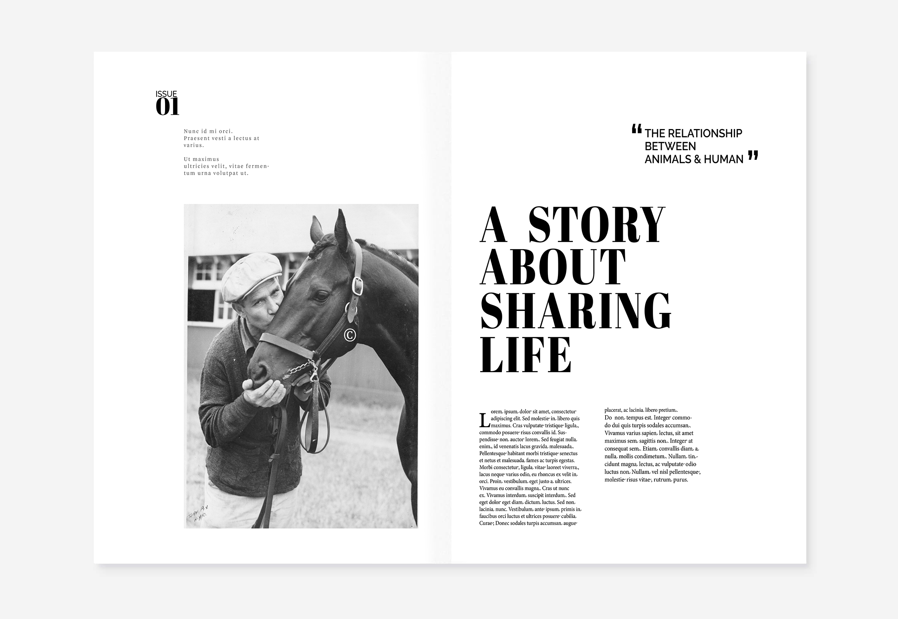
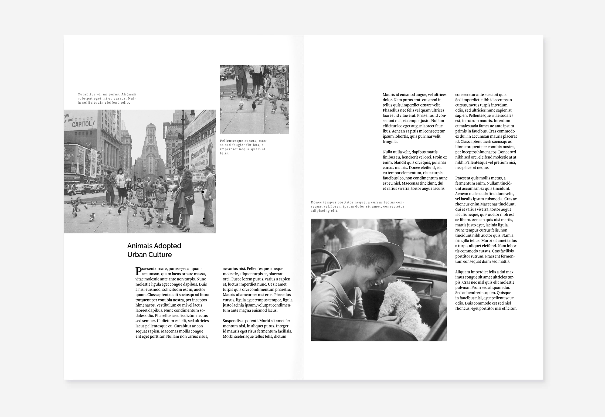
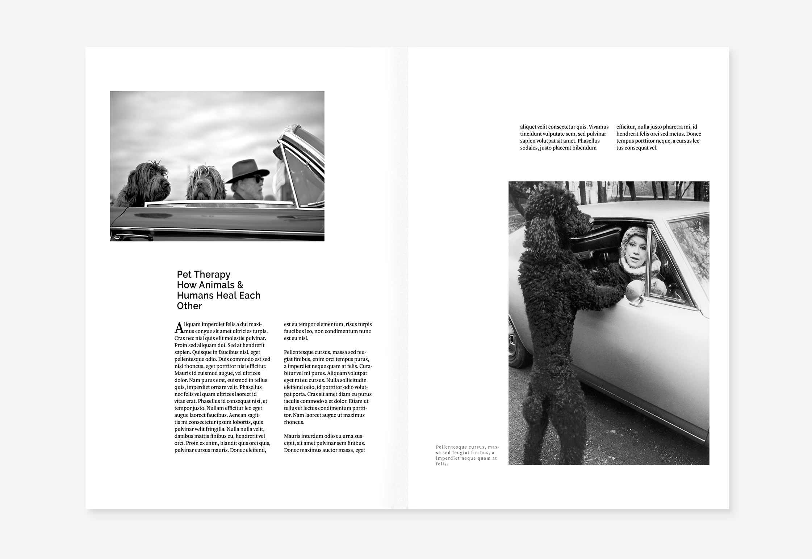
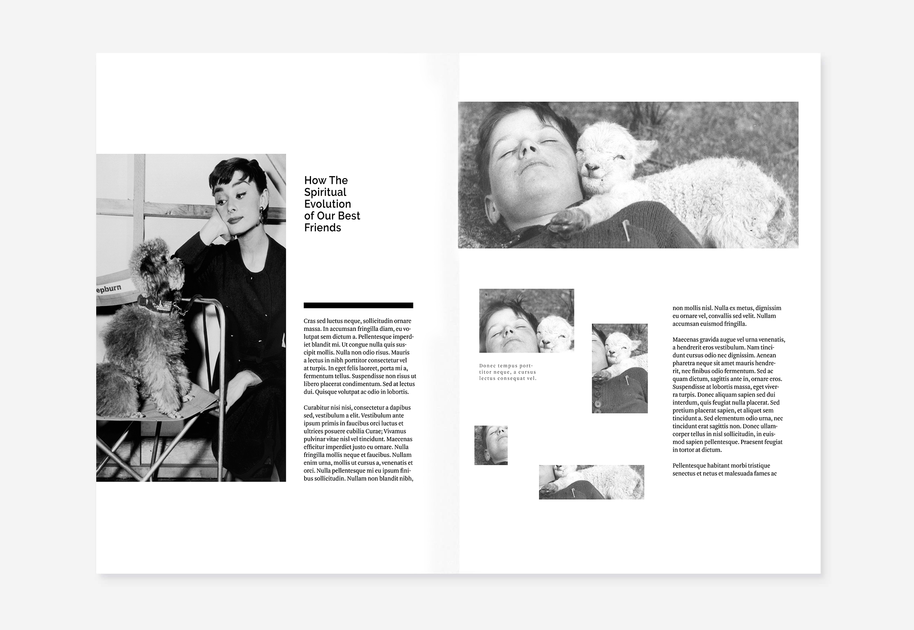

Magazine Layouts Design
2018 Spring
InDesign, Photoshop
In a group of 3, we were asked to design a five spread magazine article for print. The goal of this project is to practice our layout, communication and typographic skills. After discussion, we decided to use “relationship between human and animals” as our topic. I established the overall design and take responsibility for final adjusting.
Final Delivery
   
Process
Ideation
The first step is to research individually and make our own choice of titles, fonts, and photos. When it came to fonts selection, a challenge for me is to balance their weight, scale, style. It has to be conservative enough to look like a magazine font and special enough to catch the audiences’ eyes. I selected my fonts and photos simultaneously because they need to be coherent. I think vintage pictures look good with serif fonts.
Sketching
Then I sketched possible print layouts. By researching, I learned how magazine spreads look like, how they are different from other graphic design, what layouts are suitable for opening, middle and ending pages.
Problem
One challenge was to make spreads on InDesign based on the agreement of selection. The real challenges are to learn the software and place the elements in the right place. The hierarchy, grid structure, and white space were confusing for my first time designing magazine.
EVALUATION
After multiple adjustments, and conquering different challenges, the final design is pretty consistent overall. My favorite spreads are the beginning and ending. The remaining spreads are a little bit weak on grid structure. From this project, I learned to create flows to lead readers and manipulating important lines and whitespace to create hierarchy and aesthetic unity.